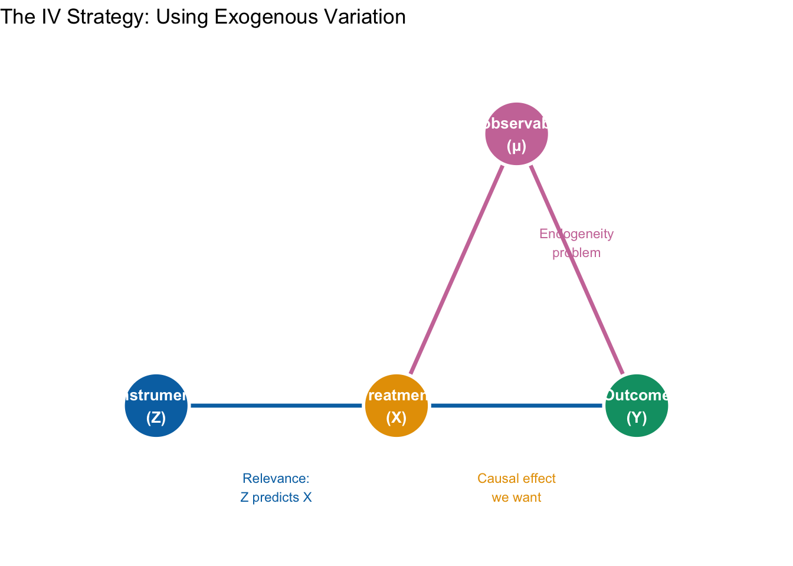
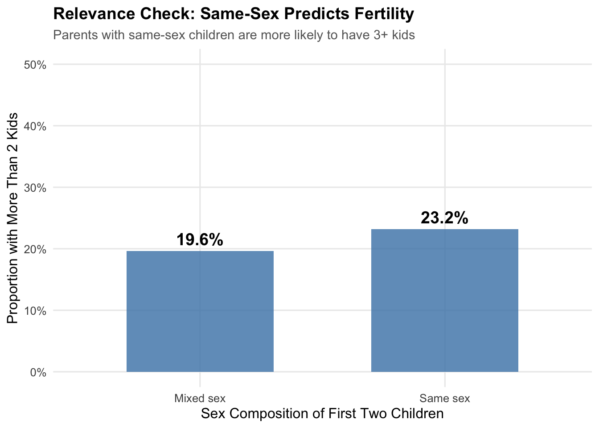
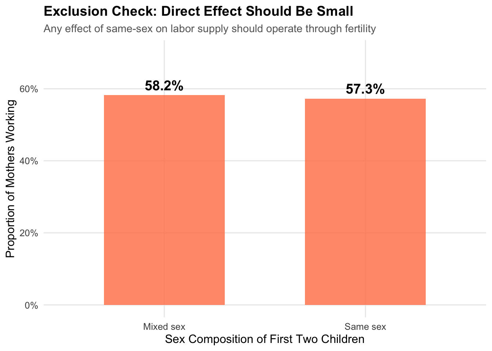
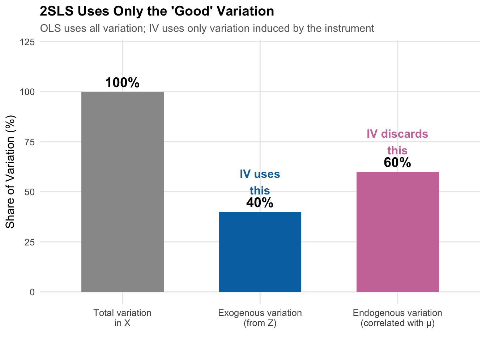
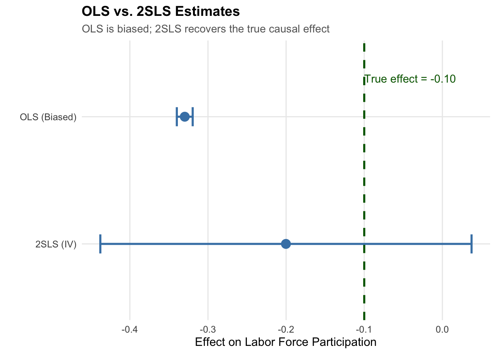
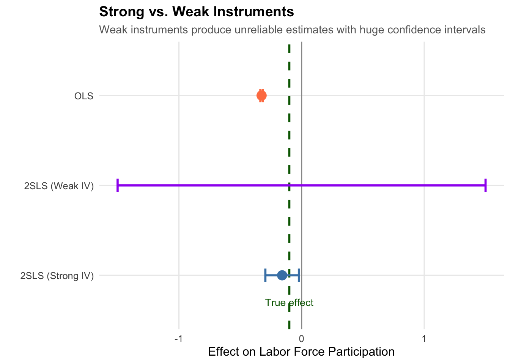

14 Instrumental Variables
TipKey Questions
- What is endogeneity and why does it cause OLS to fail?
- What are instrumental variables and what makes an instrument valid?
- How does Two-Stage Least Squares (2SLS) work?
- What is the Local Average Treatment Effect (LATE)?
- How do we test whether an instrument is strong enough?
NoteSuggested Readings
- TBD
We’ve built up a powerful toolkit for causal inference: randomized experiments, multivariate regression, fixed effects, and difference-in-differences. But what happens when none of these methods are available?
Sometimes we have only cross-sectional data, treatment is clearly endogenous, we cannot randomize, and there’s no natural experiment to exploit. In these situations, instrumental variables (IV) offers a path forward—if we can find the right instrument.
14.1 The Fundamental Problem: Endogeneity
14.1.1 When OLS Fails
Recall that OLS provides unbiased estimates when the zero conditional mean assumption holds: \(E[\mu | X] = 0\). When this assumption fails—when \(X\) is correlated with the error term—we say \(X\) is endogenous, and OLS is biased.
Endogeneity arises from three main sources:
1. Omitted Variable Bias
We want to estimate the effect of education on wages, but ability affects both education choices and wages. Since we can’t measure ability, it’s absorbed into the error term, biasing our estimate.
2. Selection Bias
We want to estimate the effect of health insurance on health outcomes, but healthier people are more likely to purchase insurance. Health status drives insurance decisions, contaminating our comparison.
3. Reverse Causality
We want to estimate the effect of police on crime, but high-crime areas get more police deployed. The causation runs both ways, making it impossible to isolate the effect of policing.
14.1.2 Formalizing the Problem
Suppose we want to estimate:
\[ y = \beta_0 + \beta_1 x + \mu \]
When \(E[\mu | x] \neq 0\), the variable \(x\) is endogenous. OLS will be biased and inconsistent—no matter how large our sample, we won’t converge to the true \(\beta_1\).
We cannot interpret the OLS coefficient as a causal effect.
14.2 The Instrumental Variables Solution
14.2.1 The Key Insight
The IV approach finds a variable \(Z\) that “shakes up” \(X\) in a way that’s unrelated to the error term. Think of it as finding a source of exogenous variation in \(X\)—variation that comes from outside the system and isn’t contaminated by the factors causing endogeneity.
14.2.2 Two Requirements for a Valid Instrument
For \(Z\) to be a valid instrument, it must satisfy two conditions:
ImportantThe Two IV Assumptions
1. Relevance: \(Cov(Z, X) \neq 0\)
The instrument must be correlated with the endogenous variable. This is testable—we can check whether \(Z\) predicts \(X\).
2. Exclusion Restriction: \(Cov(Z, \mu) = 0\)
The instrument affects \(Y\) only through \(X\). There is no direct effect of \(Z\) on \(Y\). This is not directly testable—it requires economic reasoning and assumption.
14.2.3 Graphical Intuition
The IV strategy can be visualized as a causal diagram:
The key insight: \(X\) has two types of variation—“good” variation unrelated to \(\mu\), and “bad” variation correlated with \(\mu\). OLS uses both and is therefore biased. IV uses only the “good” variation induced by \(Z\), giving us an unbiased estimate.
14.3 Application: Fertility and Labor Supply
14.3.1 The Research Question
What is the causal effect of having children on mothers’ labor force participation? This question is crucial for understanding gender wage gaps, designing parental leave policies, and evaluating childcare subsidies.
But we cannot randomize fertility! And the decision to have children is deeply endogenous:
- Reverse causality: Women may time children based on career factors
- Selection: Less career-oriented women may choose larger families
- Omitted variables: Unobserved preferences affect both fertility and work
14.3.2 The Angrist and Evans (1998) Instrument
In a landmark study, Angrist and Evans (1998) found a clever instrument for fertility: the sex composition of the first two children.
The instrument works because parents prefer mixed-sex children. If your first two children are the same sex (both boys or both girls), you’re more likely to try for a third child to “get” the other sex.
Why is this relevant? (\(Cov(Z, X) \neq 0\))
- Parents with same-sex children are more likely to have a third child
- This is an empirical fact we can verify
Why is this excludable? (\(Cov(Z, \mu) = 0\))
- Sex of children is essentially random (about 50% boys, 50% girls)
- Hard to imagine why same-sex vs. mixed-sex would directly affect labor supply
- The only plausible channel is through fertility decisions
14.3.3 Simulating the Angrist-Evans Setup
Let’s create simulated data that mirrors the Angrist-Evans setting to illustrate how IV works:
14.3.4 Testing the Relevance Condition
First, let’s verify that same-sex siblings predict having more than two children:
# Check relevance: does samesex predict morekids?
relevance_check <- ae_sim |>
group_by(samesex_lab) |>
summarize(prop_morekids = mean(morekids))
relevance_check# A tibble: 2 × 2
samesex_lab prop_morekids
<chr> <dbl>
1 Mixed sex 0.196
2 Same sex 0.232
The difference is substantial—same-sex parents are about 7 percentage points more likely to have a third child. The instrument is relevant.
14.3.5 Testing Excludability (Sort of)
We cannot directly test the exclusion restriction, but we can check whether the instrument has a small reduced-form relationship with the outcome:

The difference is small (about 1-2 percentage points), consistent with the effect operating through fertility rather than directly. Of course, this doesn’t prove excludability—we must rely on economic reasoning to argue there’s no direct channel.
14.4 Two-Stage Least Squares (2SLS)
14.4.1 The Estimation Strategy
IV models are typically estimated using Two-Stage Least Squares (2SLS):
Stage 1 (First Stage): Regress the endogenous variable on the instrument: \[ X_i = \pi_0 + \pi_1 Z_i + \nu_i \]
Get predicted values: \(\hat{X}_i = \hat{\pi}_0 + \hat{\pi}_1 Z_i\)
These predicted values contain only the variation in \(X\) that comes from \(Z\)—the exogenous variation.
Stage 2 (Second Stage): Regress the outcome on the predicted values: \[ Y_i = \beta_0 + \beta_1 \hat{X}_i + \mu_i \]
The coefficient \(\hat{\beta}_1^{2SLS}\) is our causal estimate.
14.4.2 Why Does This Work?
The first stage “purges” \(X\) of its problematic variation. Since \(Z\) is exogenous (by assumption), the predicted values \(\hat{X}\) contain only exogenous variation. When we regress \(Y\) on \(\hat{X}\), we’re using only this “clean” variation, giving us an unbiased estimate.

14.4.3 Implementing 2SLS
Let’s estimate the model step by step:
Step 1: The First Stage
# First stage: regress endogenous variable on instrument
first_stage <- lm(morekids ~ samesex, data = ae_sim)
summary(first_stage)
Call:
lm(formula = morekids ~ samesex, data = ae_sim)
Residuals:
Min 1Q Median 3Q Max
-0.2316 -0.2316 -0.1963 -0.1963 0.8037
Coefficients:
Estimate Std. Error t value Pr(>|t|)
(Intercept) 0.196288 0.002585 75.931 <0.0000000000000002 ***
samesex 0.035260 0.003664 9.623 <0.0000000000000002 ***
---
Signif. codes: 0 '***' 0.001 '**' 0.01 '*' 0.05 '.' 0.1 ' ' 1
Residual standard error: 0.4096 on 49998 degrees of freedom
Multiple R-squared: 0.001849, Adjusted R-squared: 0.001829
F-statistic: 92.61 on 1 and 49998 DF, p-value: < 0.00000000000000022The F-statistic on samesex is very large (over 100), indicating a strong instrument.
Step 2: Get Predicted Values
# Get predicted values from first stage
ae_sim <- ae_sim |>
mutate(morekids_hat = predict(first_stage))
# Look at the predictions
ae_sim |>
select(samesex, morekids, morekids_hat) |>
head(10)# A tibble: 10 × 3
samesex morekids morekids_hat
<int> <int> <dbl>
1 1 0 0.232
2 0 0 0.196
3 0 1 0.196
4 1 0 0.232
5 1 0 0.232
6 1 0 0.232
7 1 0 0.232
8 1 0 0.232
9 0 0 0.196
10 0 0 0.196Step 3: The Second Stage
# Second stage: regress outcome on predicted values
# NOTE: Standard errors from this approach are WRONG
second_stage_manual <- lm(mom_worked ~ morekids_hat, data = ae_sim)
coef(second_stage_manual)["morekids_hat"]morekids_hat
-0.2002152
WarningStandard Error Warning
The manual two-stage approach gives the correct coefficient, but the standard errors are wrong because they don’t account for uncertainty in the first stage. Always use a proper 2SLS estimator that computes correct standard errors.
14.4.4 Proper 2SLS with feols()
The fixest package provides proper 2SLS estimation with correct standard errors:
# Proper 2SLS estimation
# Syntax: outcome ~ controls | fixed effects | endogenous ~ instrument
tsls <- feols(mom_worked ~ 1 | # Just intercept (no controls)
0 | # No fixed effects
morekids ~ samesex, # First stage
data = ae_sim)
summary(tsls)TSLS estimation - Dep. Var.: mom_worked
Endo. : morekids
Instr. : samesex
Second stage: Dep. Var.: mom_worked
Observations: 50,000
Standard-errors: IID
Estimate Std. Error t value Pr(>|t|)
(Intercept) 0.621714 0.026008 23.90457 < 2.2e-16 ***
fit_morekids -0.200215 0.121213 -1.65176 0.09859 .
---
Signif. codes: 0 '***' 0.001 '**' 0.01 '*' 0.05 '.' 0.1 ' ' 1
RMSE: 0.477825 Adj. R2: 3.111e-5
F-test (1st stage), morekids: stat = 92.6067, p < 2.2e-16 , on 1 and 49,998 DoF.
Wu-Hausman: stat = 1.1581, p = 0.281862, on 1 and 49,997 DoF.14.4.5 Comparing OLS and 2SLS
# OLS for comparison (biased)
ols <- lm(mom_worked ~ morekids, data = ae_sim)
The OLS estimate is more negative than the true effect (-0.10) because it’s contaminated by selection: women with lower career orientation both have more children and are less likely to work, making the correlation more negative than the causal effect.
The 2SLS estimate is much closer to the true effect because it uses only the exogenous variation from the same-sex instrument.
14.5 Testing for Weak Instruments
14.5.1 The Weak Instrument Problem
If the instrument is only weakly correlated with \(X\), 2SLS performs poorly:
- Estimates become biased (toward OLS!)
- Standard errors become unreliable
- Inference is invalid
14.5.2 The F-Test Rule of Thumb
Stock and Yogo (2005) established a rule of thumb:
NoteWeak Instrument Test
The first-stage F-statistic should exceed 10 for the instrument to be considered strong. With F < 10, 2SLS estimates may be severely biased.
In our example, the first-stage F-statistic is well over 100—a very strong instrument.
14.5.3 What Happens with a Weak Instrument?
Let’s see what happens when we use a weak (essentially random) instrument:
# Create a weak instrument (random noise)
set.seed(123)
ae_sim <- ae_sim |>
mutate(weak_instrument = rnorm(n()))
# Try 2SLS with weak instrument
weak_iv <- feols(mom_worked ~ 1 | 0 | morekids ~ weak_instrument,
data = ae_sim)
With a weak instrument, the estimate is wildly off and the confidence interval is enormous. Always check your first-stage F-statistic!
14.6 What Does IV Estimate? The LATE
14.6.1 The Local Average Treatment Effect
An important subtlety: IV does not estimate the same quantity as OLS or DiD. It estimates the Local Average Treatment Effect (LATE)—the causal effect for a specific subpopulation called compliers.
14.6.2 Four Types of People
In the fertility example, we can categorize people by how their fertility responds to the instrument:
| Type | Description |
|---|---|
| Always-takers | Would have 3+ kids regardless of sex composition |
| Never-takers | Would never have 3+ kids regardless of sex composition |
| Compliers | Have 3+ kids because first two were same-sex |
| Defiers | Have 3+ kids only if first two were different-sex |
IV identifies the causal effect only for compliers—those whose treatment status was actually changed by the instrument.
14.6.3 Who Are the Compliers?
In the Angrist-Evans context, compliers are parents who:
- Wanted mixed-sex children strongly enough to try for a third
- Would have stopped at two kids if the first two were different sexes
This is not:
- All parents with 3+ children
- Parents who wanted large families regardless
- Parents who strongly preferred small families
14.6.4 Trade-offs of IV Estimation
| Advantages | Disadvantages |
|---|---|
| Credible causal identification | Estimates LATE, not ATE |
| Handles endogeneity | Less generalizable |
| No need for RCT or natural experiment | Requires strong assumptions |
| Works with cross-sectional data | Often larger standard errors |
14.7 Classic IV Applications
Instrumental variables have been used to study many important questions:
| Study | Question | Instrument |
|---|---|---|
| Card (1995) | Returns to education | Distance to college |
| Acemoglu et al. (2001) | Do institutions cause growth? | Colonial settler mortality |
| Levitt (1997) | Effect of police on crime | Electoral timing |
| Angrist & Krueger (1991) | Returns to education | Quarter of birth |
14.7.1 Example: Card (1995) - Returns to Education
Question: What is the causal effect of education on wages?
Problem: Ability is unobserved but affects both education and wages, biasing OLS upward.
Instrument: Distance to the nearest college. People who grew up closer to a college got more education.
Why relevant? Proximity reduces the cost of attending college.
Why excludable? Distance to a college shouldn’t directly affect wages decades later (only through education).
Finding: Returns to education are actually higher than OLS suggests—the ability bias works in the opposite direction from what many expected.
14.8 Summary
Instrumental variables provide a powerful tool for causal inference when other methods fail. The key is finding a variable that affects treatment but has no direct effect on the outcome.
The two requirements:
- Relevance: The instrument predicts the endogenous variable (testable via first-stage F-statistic > 10)
- Exclusion: The instrument affects the outcome only through the treatment (requires economic reasoning—not directly testable)
Key insights:
- 2SLS uses only the exogenous variation in \(X\) induced by \(Z\)
- IV estimates the Local Average Treatment Effect (LATE) for compliers
- Weak instruments produce unreliable estimates—always check the first-stage F-statistic
- The exclusion restriction is crucial but untestable—think carefully about whether it holds
IV requires strong assumptions, but when those assumptions are credible, it provides a path to causal inference even in challenging observational settings.
14.9 Check Your Understanding
For each question below, select the best answer from the dropdown menu.
TipShow Explanation
Endogeneity means the explanatory variable is correlated with the error term: Cov(X, μ) ≠ 0. This violates the key OLS assumption and causes bias. Common sources include omitted variables, selection, and reverse causality.
Relevance (Cov(Z, X) ≠ 0) can be tested by regressing X on Z and checking the F-statistic. The exclusion restriction (Cov(Z, μ) = 0) cannot be directly tested because we don’t observe μ. It must be justified with economic reasoning.
Parents tend to prefer having children of both sexes. If their first two children are the same sex, they’re more likely to try for a third to “get” the other sex. Since biological sex is essentially random, this creates exogenous variation in fertility.
Stock and Yogo (2005) established that a first-stage F-statistic below 10 indicates a weak instrument. With weak instruments, 2SLS estimates are biased (toward OLS) and inference is unreliable.
IV estimates the Local Average Treatment Effect (LATE) for compliers—those whose treatment status was actually changed by the instrument. It doesn’t identify effects for always-takers or never-takers, whose treatment status is unaffected by the instrument.
This pattern suggests that the OLS relationship was driven by selection or omitted variable bias rather than a true causal effect. For example, if people who choose X also have characteristics that lead to lower Y, OLS would show a negative correlation even if X has no causal effect. 2SLS, by using only exogenous variation, reveals that the true causal effect is zero.